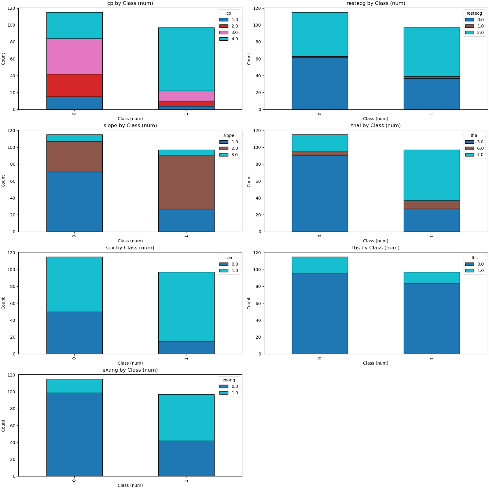
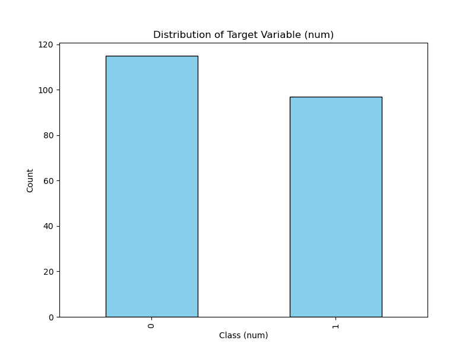
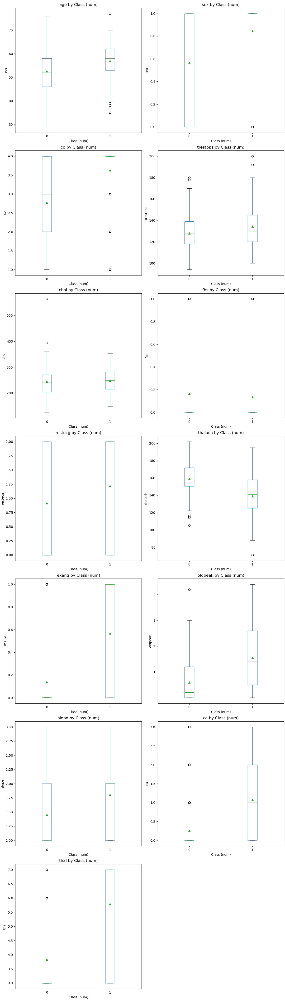
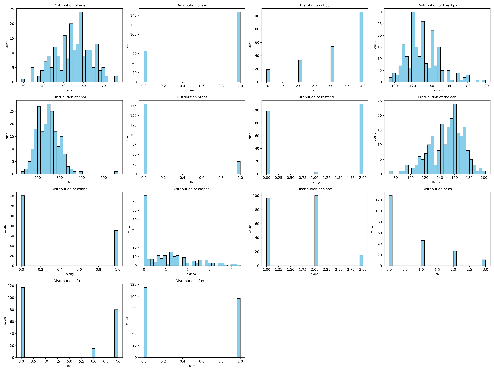
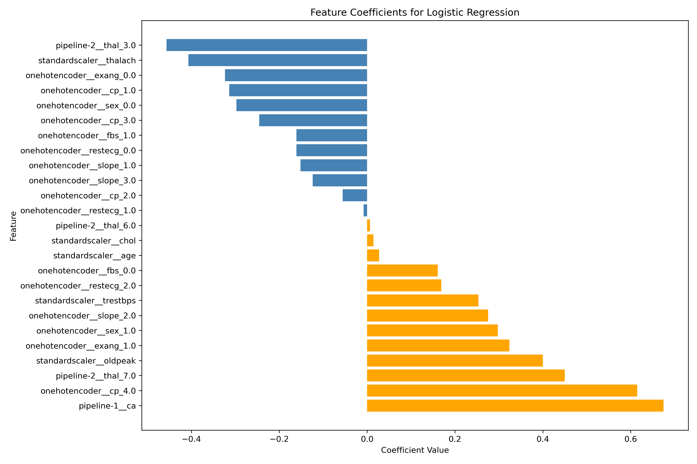

Introduction
Heart disease is the leading cause of death worldwide, accounting for nearly 18 million deaths annually. Early diagnosis is critical to improving outcomes, but traditional diagnostic methods are often time-consuming and require significant expertise.
Could machine learning offer a faster and more scalable solution? In this blog, I’ll take you through how we used the Cleveland Heart Disease dataset to predict heart disease using machine learning. You’ll learn how to preprocess data, select models, and evaluate performance, with practical insights along the way.
Dataset Overview
The Cleveland Heart Disease dataset is a well-known dataset for predicting the presence of heart disease. It contains 303 observations, with each representing a patient. The dataset includes 13 features, such as age, cholesterol levels, and exercise-induced angina, along with a target variable (num) indicating the presence (1) or absence (0) of heart disease.
Feature Breakdown
- Categorical features: Sex, chest pain type (cp), fasting blood sugar (fbs), and rest electrocardiographic results (restecg).
- Numerical features: Age, resting blood pressure (trestbps), serum cholesterol (chol), and maximum heart rate achieved (thalach).
Below is a figure of the categorical feature distributions, which helps highlight trends among patient groups:

The target variable distribution also shows an imbalance, with more cases of no heart disease (0) than cases with heart disease (1):

These features capture a mix of physiological and clinical data, making them ideal for predicting heart disease.
Data Preprocessing
Data preprocessing is a crucial step before building any machine learning model. For this dataset, we took the following steps:
Handling Missing Values:
The dataset used a placeholder (?) for missing values. These were replaced withNaN, and rows with too many missing values were dropped.Encoding Categorical Features:
Features likecpandsexwere encoded using one-hot encoding to make them suitable for machine learning models.Splitting the Data:
The dataset was split into training (70%) and test (30%) subsets using stratified sampling to maintain the target variable’s distribution.Standardization:
Numerical features were standardized to ensure they were on a similar scale, which is critical for models like logistic regression and SVC.
We can see from the boxplots below that there are variability and potential outliers:

Model Selection
We evaluated four models to predict heart disease:
Logistic Regression:
Chosen for its simplicity and interpretability.Support Vector Classifier (SVC):
Effective for classification tasks but sensitive to hyperparameters.Decision Tree:
Provides easy-to-interpret results but tends to overfit.Dummy Classifier:
Used as a baseline for comparison.
We used 5-fold cross-validation to tune hyperparameters and evaluated models based on accuracy.
Results and Visualizations
The Logistic Regression model achieved the highest accuracy of 84%, outperforming the other models. Here’s a summary of the results:
| Model | Accuracy |
|---|---|
| Logistic Regression | 0.84 |
| Support Vector Classifier | 0.82 |
| Decision Tree | 0.78 |
| Dummy Classifier | 0.54 |
Key Visualizations
- Confusion Matrix for Logistic Regression:
This plot shows the model’s performance in predicting true positives and negatives.

- Logistic Regression Coefficients:
Below is a chart showing the feature coefficients from the Logistic Regression model. Features like chest pain type (cp) and ST depression (oldpeak) significantly impact heart disease prediction.

Challenges and Insights
Imbalanced Data:
The dataset had more samples without heart disease, making it challenging for the model to generalize. Stratified sampling helped mitigate this issue.Interpreting Encoded Features:
One-hot encoding expanded categorical features into multiple columns, which made interpreting coefficients less straightforward.Feature Importance:
Logistic Regression provided insights into which features were most important, such ascpandthal.
Conclusion
This project demonstrates that machine learning models, especially Logistic Regression, can effectively predict heart disease when the data is preprocessed and models are evaluated thoughtfully. By focusing on explainability and careful preprocessing, these methods can pave the way for faster, more accurate healthcare diagnostics.
If you’re curious about applying machine learning to other healthcare problems, try experimenting with similar datasets. The possibilities are endless!